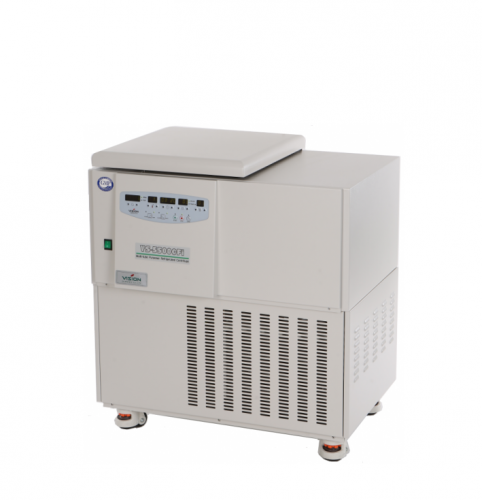
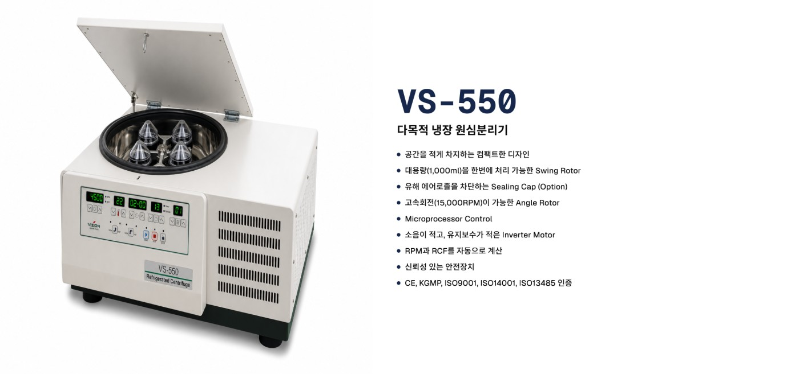
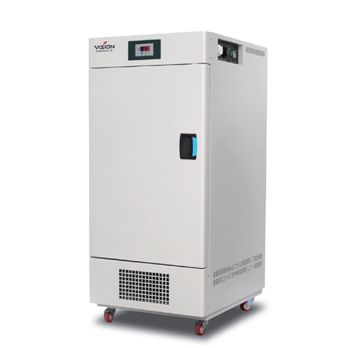
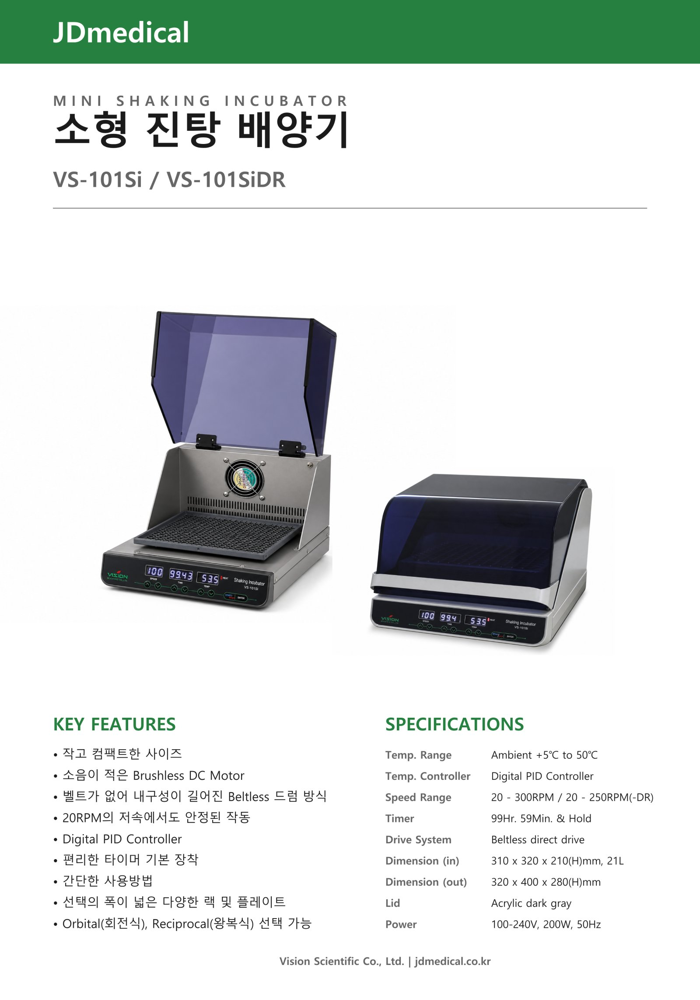

원심분리기
Lab · Centrifuge
VS-550 다목적 냉장 원심분리기
Products
대표 제품을 탭으로 나눠 확인하세요. 상세 사양은 비전과학 공식 자료를 함께 참고해 주세요.

VS-550 다목적 냉장 원심분리기

컴팩트 설계 · 스윙/앵글 로터 · CE · KGMP · ISO 인증

VS-3125Bi / VS-3150Bi 소형 저온배양기
소형 저온배양기 라인업입니다. 사양·옵션·카탈로그는 비전과학 협력 페이지의 공식 사이트를 통해 확인해 주세요.

Brushless DC · Beltless 드라이브 · Orbital / Reciprocal